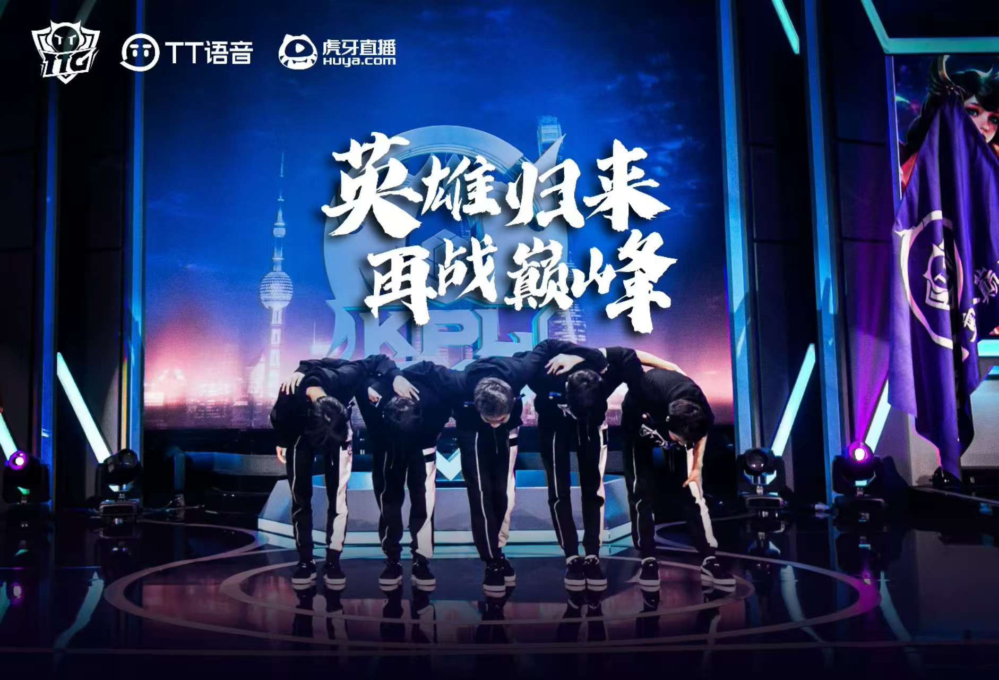

赛事回顾
2021年6月26日，2021KPL春季赛，广州TTG迎来阵容重组后的强势爆发。清清、不然等核心选手加盟后，战队迅速磨合成型，常规赛一路高歌猛进锁定上游， 季后赛更是展现出极强的韧性，从败者组绝境突围，历经多轮硬仗淘汰劲敌，最终与南京Hero久竞（现南通Hero久竞）会师总决赛，向着队史首座银龙杯发起冲击。 决赛场上，双方展开极致拉扯，TTG队员们在团战中展现出默契配合与敢打敢拼的风格，多次打出极限翻盘的精彩操作，但在关键局的细节把控上稍显不足，最终以3:4憾负对手，与冠军失之交臂。 其中，最后一局巅峰对决所掏出的镜像阵容更是被广为熟知，在KPL历史上留下浓墨重彩的一笔。
关键数据
- 总比分: 广州TTG VS 南京Hero久竞 3:4
- 首发阵容：
对抗路：清清（吴金翔）
打野：不然（叶康）
中路：九尾（许鑫蓁）
发育路：钎城（周诣涛）
辅助：冰尘（李小龙） - FMVP：南京Hero久竞清融
舆论反馈
赛前，重组后的TTG凭借赛季亮眼表现圈粉无数，粉丝们满怀期待，盼着这支“全新之师”能在春决舞台圆梦，社交媒体上“TTG冲冠”的呼声高涨，老粉更是感慨“终于等到战队重返巅峰对决”。 失利后，惋惜与心疼成为主流情绪。粉丝们共情队员们赛后泛红的眼眶，直言“3:4的比分足以证明实力，拼到最后一刻已经赢了”，认可他们整个赛季的成长与突破；许多人选择暖心鼓励“第一次闯进春决就打到决胜局，未来可期”。 即便留有遗憾，粉丝们的支持依旧坚定。大家坚信这支充满潜力的队伍能吸收经验、稳步成长，终将打破魔咒，捧起属于广州TTG的冠军奖杯。
返回荣誉合集